전파전자기능사(구) (2005-01-30 기출문제)
1과목: 임의 구분
1. 기본파의 진폭이 10[V],제 2고조파 및 제 3고조파의 진폭이 각각 4[V],3[V]의 전압에 대한 진폭 일그러짐율은?
- 20%
- 30%
- 40%
- 50%
(정답률: 알수없음)

2. 지표파의 전파에 가장 감쇄를 많이 주는 곳은?
- 평야
- 해상
- 산악지대
- 시가지
(정답률: 알수없음)
3. 다음 중 정류회로의 쵸오크 코일의 작용은?
- 직류분을 막기 위하여
- 맥류분을 막기 위하여
- 전압을 낮추기 위하여
- 전압을 높이기 위하여
(정답률: 알수없음)
4. 급전선의 임피던스가 75[Ω ]인 안테나에 특성 임피던스가 25[Ω]인 피더를 연결 한다면 반사계수는 얼마인가?
- 0.2
- 0.5
- 0.6
- 0.8
(정답률: 알수없음)
5. 안테나를 구조에 의해 분류하였을 때 관계 없는 것은?
- 선형(선상)안테나
- 판상 안테나
- 입체(개구면) 안테나
- 정재파 안테나
(정답률: 알수없음)
6. 정지 궤도 위성을 통신 위성으로 사용할 때 특징은?
- 위성을 용이하게 추적할 수 없다.
- 위성의 수에 제한을 받지 않는다.
- 정지궤도는 남극과 북극에 존재한다.
- 전화회선에서는 전파의 시간 지연이 있다.
(정답률: 알수없음)
7. 전자파의 VHF대의 주파수 범위는?
- 30[㎑]∼300[㎑]
- 300[㎑]∼3000[㎑]
- 30[㎒]∼300[㎒]
- 300[㎒]∼3000[㎒]
(정답률: 알수없음)
8. 전계강도의 측정 지점에 실효높이 2[m]의 안테나에 유기되는 전압이 100[㎶]라면 그 지점의 전계강도는 몇[㎶/m] 인가?
- 0.02
- 50
- 200
- 400
(정답률: 알수없음)
9. 의사 공중선은 신호 발생기와 수신기 사이에 삽입하는 회로 또는 송신기 출력측정시 사용하는 회로이다. 송신기의 출력을 측정하는데 이 공중선을 사용하는 이유는 무엇인가?
- 정합장치로 사용코자
- 불필요한 전파 발사의 방지
- 기생 발사의 억제
- 변조도 측정
(정답률: 알수없음)
10. 우리나라 최초의 상업용 국내 방송 위성인 무궁화 1호 위성을 발사한 년도는?
- 1970년
- 1982년
- 1990년
- 1995년
(정답률: 알수없음)
11. 스펙트럼 분석기(spectrum analyzer)의 용도로 적당하지 않는 것은?
- 변조의 직선성 측정
- 펄스폭 및 반복율 측정
- RF 간섭시험
- FM 편차 측정
(정답률: 알수없음)
12. 다음에 열거한 AM 송신기의 구성요소중 신호파와 반송파를 합성하여 AM파로 만드는 곳은?
- 변조기
- 전력 증폭기
- 완충 증폭기
- 주파수 체배기
(정답률: 알수없음)
13. 다음 중 안테나의 손실저항이 아닌 것은?
- 도체저항
- 접지저항
- 복사저항
- 코로나손
(정답률: 알수없음)
14. FDMA의 기본 원리를 나타낸 그림이다. 각 채널간의 일정한 간격을 나타낸 말은?
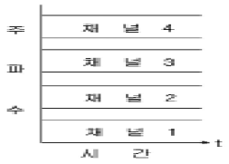
- 진폭 대역
- 주파수 대역
- 채널 보호 대역
- 음성 주파수 대역
(정답률: 알수없음)
15. FM 수신기의 설명 중 틀린 것은?
- AM 수신기보다 통과 대역이 넓다.
- 진폭 제한기를 사용할 수 없다.
- 스켈치회로를 사용한다.
- 2중 수퍼헤테로다인 방식으로 할 수 있다.
(정답률: 알수없음)
16. 슈퍼 헤테로다인 수신기에서 주파수 변환부의 역할은?
- 입력된 고주파 신호를 증폭한다.
- 중간주파 신호를 증폭한다.
- 저주파 신호를 증폭한다.
- 중간주파 신호를 만들어 낸다.
(정답률: 알수없음)
17. 슈퍼헤테로다인 수신기에서 1000[kHz]의 전파를 수신하고 있을 때 국부 발진 주파수가 1500[kHz]라면 중간 주파수는 얼마로 되는가?
- 455[kHz]
- 500[kHz]
- 1455[kHz]
- 2500[kHz]
(정답률: 알수없음)
18. FS 통신방식은 일종의 어떤 변조 방식인가?
- PCM변조방식
- AM변조방식
- FM변조방식
- PPM변조방식
(정답률: 알수없음)
19. 수신기의 종합 주파수 특성 및 파형의 일그러짐률 등에 따라 정해지는 것은?
- 선택도
- 안정도
- 충실도
- 잡음지수
(정답률: 알수없음)
20. 전리층이나 대류권 층내에 불규칙하게 전자밀도가 강한부분이 존재하여 초단파대에서 가시거리보다 더 먼거리의 수신이 가능하게 하는 것은?
- 지표파
- 전리층파
- 직접파
- 산란파
(정답률: 알수없음)
2과목: 임의 구분
21. 다음은 어떤 용어의 정의에 해당하는가?
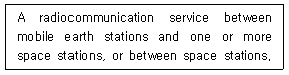
- Mobile Service
- Space Operation Service
- Land Mobile Service
- Mobile-Satellite Service
(정답률: 알수없음)
22. What distress signal do you send in radiotelephony?
- K
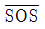
- VVV
- MAYDAY
(정답률: 알수없음)
23. 다음 문장의 가장 올바른 영역은?
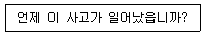
- When did accident happen?
- When did this accident happen?
- When this did accident happen?
- When has this accident happen?
(정답률: 알수없음)
24. 다음 문장이 가르키는 것은?
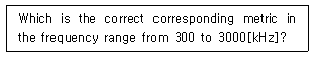
- Kilometric waves
- Hectometric waves
- Decametric waves
- Decimetric waves
(정답률: 알수없음)
25. "SEELONCE MAYDAY" 의 뜻이 맞는 것은?
- 조난통신중이니 정지하시오.
- 제한업무의 재개통지
- 조난통신의 종류
- 조난통신에 대한 구조요청
(정답률: 알수없음)
26. 다음 물음에 맞는 답은?
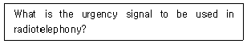
- three repetitions of the word PAN.
- three repetitions of the word PAN PAN.
- two repetitions of the word PAN PAN.
- two repetitions of the word PAN.
(정답률: 알수없음)
27. "호출 부호"를 바르게 영역한 것은?
- station sign
- calling name
- call sign
- station name
(정답률: 알수없음)
28. ITU 의 협약 제2부속서에서 다음과 같이 정의된 용어는?
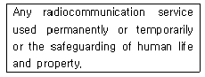
- Radio Service
- Public Service
- International Service
- Safety Service
(정답률: 알수없음)
29. What do you call the person responsible for a ship?
- We call it the Hanjinho.
- We call him the captain.
- We call him the first engineer.
- We call him the chief officer.
(정답률: 알수없음)
30. 다음 중 알파벳 통화표에 의한 사용단어가 틀린 것은?
- P : PAPA
- Q : QUEEN
- R : ROMEO
- T : TANGO
(정답률: 알수없음)
31. 무선전화에서 "당신의 통보를 보내시오" 의 용어는?
- Roger
- Off
- Stop
- Go ahead
(정답률: 알수없음)
32. 다음 영문의 밑줄 친 부분의 가장 적합한 번역은?
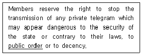
- 공공복리
- 공중심리
- 시민권리
- 공공질서
(정답률: 알수없음)
33. 무선전화 통화시 다음을 나타내는 적합한 절차용어는?
- WILCO
- STAND BY
- INTERVAL
- HOLDING A MINUTE
(정답률: 알수없음)
34. 다음 중 약어 "NIL"로 답변할 수 있는 질문은?
- Does my frequency vary?
- Are you trouble by static?
- Are you ready?
- Have you message to send?
(정답률: 알수없음)
35. 다음 문장의 가장 적합한 국역은?
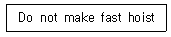
- 빨리 정박을 하지 마시오.
- 빨리 늦추지 마시오.
- 빨리 감아 올리지 마시오.
- 빨리 서둘지 마시오.
(정답률: 알수없음)
36. 다음 문장 중 밑줄친 부분의 뜻으로 가장 적합한 것은?
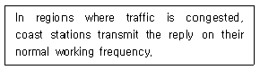
- 교통혼잡 지역에서
- 통화 지역에서
- 통신혼잡 지역에서
- 소량의 소통지역에서
(정답률: 알수없음)
37. 용어 GMDSS 의 원어는?
- Ground moving discrete and search system.
- Global maritime distress and safety system.
- Global system on maritime search and rescue.
- Global moving distress shore-based system.
(정답률: 알수없음)
38. 다음 문장의 ( ) 안에 가장 적합한 것은?
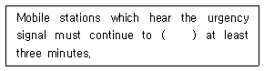
- listen at
- listen for
- listen on
- listen of
(정답률: 알수없음)
39. 다음 문장의 ( )안에 적합한 것은?
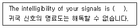
- poor
- bad
- good
- fair
(정답률: 알수없음)
40. 다음 문장의 ( )안에 가장 알맞는 것은?
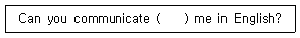
- on
- with
- by
- to
(정답률: 알수없음)
3과목: 임의 구분
41. 정지궤도상의 해사위성통신(INMARSAT)의 통신범위와 가장관계 깊은 해역은?
- A1 해역
- A2 해역
- A3 해역
- A4 해역
(정답률: 알수없음)
42. 제한구역의 설명으로 가장 타당한 것은?
- 비인가자의 출입이 금지되는 보안상 극히 중요한 구역
- 외국인의 출입이 금지되는 내국인 보호구역
- 비인가자의 접근을 방지하기 위하여 그 출입에 안내가 요구되는 구역
- 재산의 보호를 위하여 경호원에 의한 일반인의 감시가 요구되는 지역
(정답률: 알수없음)
43. 다음 중 ITU의 최고 기관은?
- 사무총국
- ITU 이사회
- 전권위원회
- 자문위원회
(정답률: 알수없음)
44. 다음 중 전령통신을 하는 이유로 가장 타당한 것은?
- 외부로부터 피습당할 우려가 없다.
- 기후의 영향을 받지 않는다.
- 신속성이 높다.
- 보안도가 높다.
(정답률: 알수없음)
45. 무선통신의 원칙이 아닌 것은?
- 무선통신의 내용은 필요 최소한의 사항으로 이루어져야 한다.
- 무선통신에 사용하는 용어는 가능한 한 상세히 설명하여 상대방이 이해할 수 있어야 한다.
- 무선통신을 하는 때에는 자국의 호출부호(호출명칭) 등을 붙여서 그 출처를 명확하게 하여야 한다.
- 무선통신을 하는 때에는 정확하게 송신하여야 하며, 오류를 인지한 때에는 즉시 정정하여야 한다.
(정답률: 알수없음)
46. 국제전기통신연합의 전파통신부문은 다음 기관을 통하여 활동한다. 해당되지 않는 기관은?
- 전파통신협회
- 전파통신총회
- 전파관리위원회
- 전파통신연구반
(정답률: 알수없음)
47. 협대역직접인쇄전신장치에 의하여 영문으로 해상안전정보를 수신하는 업무를 무엇이라 하는가?
- 네비텍스 업무
- 텔레텍스 업무
- 텔레그래프 업무
- 인텔셋 업무
(정답률: 알수없음)
48. 전파법의 궁극적인 목적은 무엇인가?
- 전파의 효율적 제한
- 전파의 기술적 관리
- 전파에 관한 신기술 개발 및 부가가치 창출
- 전파의 진흥도모 및 공공복리 증진
(정답률: 알수없음)
49. 획득 하려는 정보를 최대한으로 지연시키기 위한 방법은?
- 통신 약어를 사용하는 방법
- 모르스 부호를 사용하는 방법
- 암호를 사용하는 방법
- 한글발성 부호를 사용하는 방법
(정답률: 알수없음)
50. 전파통신에서 사용되는 전파의 정의로 맞는 것은?
- 3,000MHz이하의 주파수의 전자파
- 3,000GHz이하의 주파수의 전자파
- 4,000MHz이하의 주파수의 전자파
- 4,000GHz이하의 주파수의 전자파
(정답률: 알수없음)
51. 「조난선박의 생존정에서 구조선박의 레이더 화면상에 자신의 위치를 여러 개의 점으로 표시하여 구조 활동을 용이 하게 하기 위한 설비」에 해당되는 것은?
- 협대역직접인쇄전신
- 비상위치지시용 무선표지설비
- 수색 구조용 레이더 트랜스폰더
- 초단파대 양방향무선전화장치
(정답률: 알수없음)
52. 무선국 허가의 심사기준에 관계 없는 것은?
- 준공 예정일이 적합 할 것
- 기술기준에 적합 할 것
- 주파수 지정이 가능 할 것
- 무선종사자의 배치계획이 적합 할 것
(정답률: 알수없음)
53. 다음 중 상대방의 통신을 모방하여 중요한 비밀을 발설하도록 유도하는 것으로 맞는 것은?
- 기만통신
- 방해통신
- 교신분석
- 방향탐지
(정답률: 알수없음)
54. 중요내용이 통신중에 누설되는 가장 큰 요인은?
- 보고체제의 일원화
- 확인법 사용회피
- 중요내용에만 약호사용
- 취약한 통신망 이용
(정답률: 알수없음)
55. 다음중 세계 해상 조난 및 안전제도에서의 긴급 및 안전통신에 포함되지 않는 것은?
- 선박의 보고통신
- 항행 및 기상경보
- 구조를 위한 현장통신
- 수색 및 구조작업 지원통신
(정답률: 알수없음)
56. 수신설비의 성능조건으로 적합하지 않은 것은?
- 선택도가 클것
- 감도가 충분할것
- 이득과 능률이 클것
- 명료도가 충분할것
(정답률: 알수없음)
57. 다음 중 시호통신의 통신보안상 취약점이 아닌 것은?
- 수신자 확인이 곤란하다.
- 원거리 통신이 불가능하다.
- 신호누설에 의한 기만 및 역용당할 우려가 있다.
- 정보탐지자의 피습을 당할 우려가 있다.
(정답률: 알수없음)
58. 다음 무선국 중 무선국개설허가의 유효기간이 3년인 것은?
- 실험국 및 실용화 시험국
- 방송국
- 아마추어국
- 간이무선국
(정답률: 알수없음)
59. 현용자재의 정확한 취급과 관리유지를 위한 방법으로 가장 타당한 것은?
- 통신소 내부 투시 방지
- 자물쇠의 번호를 수시 변경
- 재고조사 등 일일점검 실시
- 비상시 파기기구를 비치
(정답률: 알수없음)
60. 조난경보를 수신한 해안국과 해안지구국은 그 경보를 즉시 어느 곳에 전송하여야 하는가?
- 현장지휘관
- 해상수색통제관
- 주무부장관
- 구조조정본부
(정답률: 알수없음)